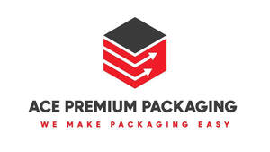

Trade Mark Journal No.2025/031 1 August 2025
UK00004235647 17 July 2025 (16)

- Class 16
- Shopping bags of paper or plastic; Rubbish bags (made of paper or plastic materials); Plastic material for packaging; Plastic sheets for wrapping and packaging; Paper; Bags and articles for packaging, wrapping and storage of paper, cardboard or plastics; Absorbent sheets of paper or plastic for foodstuff packaging; Food bags of paper or plastics; Paper bags for packaging; Packaging bags of paper; Carrier bags of paper or plastic; Bags for packaging made of biodegradable paper; Garbage bags of paper or of plastics; Bags (Garbage -) of paper or of plastics; Bags [envelopes, pouches] of paper or plastics, for packaging; Plastic coated copying paper; Humidity control sheets of paper or plastic for foodstuff packaging; Plastic sheets for packaging; Carbon paper [finished products]; Plastic materials for packaging; Printed packaging materials of paper; Bags made of paper for packaging; Containers of paper for packaging; Packaging containers of paper; Paper pouches for packaging; Packaging boxes of paper; Plastic bags for packaging; Bags of paper for foodstuffs; Bags for packaging made of biodegradable plastic; Packaging materials made of recycled paper; Packaging materials of plastic for sandwiches; Stencil paper [finished products]; Paper and cardboard; Industrial packaging containers of paper; Packaging materials made from mineral-based paper substitutes; Paper bags; Bags of paper; Paper containers; Industrial paper and cardboard; Bottle wrappers of cardboard or paper; Bottle wrappers of paper or cardboard; Labels of paper or cardboard; Padding materials of paper or cardboard; Recycled paper; Paper for use in the manufacture of tea bags; Plastic bags for wrapping and packaging; Plastic bags for packaging ice; Packaging wrappers of plastic; Semi-processed paper; Boxes of cardboard or paper; Boxes of paper or cardboard; Paper envelopes for packaging; Plastic film roll stock for packaging pharmaceuticals; Containers for ice made of paper or cardboard; Paper tissues for cosmetic use; Cloth paper; Bags of bubble plastics for packaging; Paper crafts materials; Bottle envelopes of paper or cardboard; Bottle envelopes of cardboard or paper; Cream containers of paper; Letter paper [finished products]; Plastic envelopes; Tissue paper for use as material of stencil paper (ganpishi); Foils of plastic for packaging; Paper stock [printing paper]; Bags made of plastics for packaging; Biodegradable paper pulp-based to-go containers for food; Signboards of paper or cardboard; Containers of paper for packaging purposes; Conical paper bags; Bags (Conical paper -); Synthetic paper; Plastic bags for wrapping; Plastic film roll stock for packaging electronic devices; Paper knives being parts of paper cutters for office use; Airtight packaging of paper; Plastic foil for packaging; Plastic sheets for wrapping; Corrugated paper.
ACE PREMIUM PACKAGING LTD